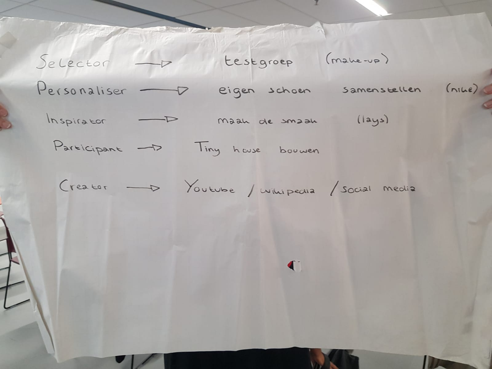

Smart Business
Op deze pagina zijn de opdrachten per week van het onderdeel Smart Business te vinden.
Week 1 - Smart Working You
In week 1 hebben we door middel van een kort interview met medestudenten een Value Propositions Canvas gemaakt over ons zelf. Voor deze les heb ik wat korte vragen voorbereid die ik stelde aan mijn klasgenoten. Deze opdracht hebben we met een groep van drie studenten uitgevoerd. Het Value Propositions Canvas onderscheidt "gains" en "pains" die te maken hebben met ons zelf en onze verwachtingen van de Minor.Week 2 - Smart Products Klant
In de tweede week kregen we een workshop van Geert Rensen van Be Informed. Hij heeft een aantal casussen gegeven om te gebruiken tijdens deze workshop. Tijdens deze workshop hebben we onze kennis vergroot op het gebied van Business Model Canvas, Design Thinking, veranderplan en businesscase. Ter voorbereiding van de les heb ik me verdiept in het Business Canvas Model. Dit model speelt een grote rol tijdens mijn opleiding. Hiermee kan je de negen bouwstenen van een organisatie in kaart brengen. Het omvat verschillende aspecten, zowel intern als externe aspecten.Week 4 - Smart Factories Organisaties
Deze week werd een workshop gegeven door Paul Kalis van Qander. Hij heeft ons uitgelegd wat het TOM³ model inhoudt. Dit model hebben we eerst op fictieve bedrijven toegepast. Daarna hebben we dit model op TNO toegepast. Ter voorbereiding van deze workshop hebben we een analyse van onze projectorganisatie (TNO) gemaakt.Week 6 - Smart Working Keten
In deze week kwam Ilke Oner ons een workshop geven over het brein. Dit was een hele leuke workshop om te volgen. Hier heeft zij de werking van het brein uitgelegd en hoe je dit kan toepassen op belangrijke momenten. Het gaat hier dan bijvoorbeeld over momenten van angst of sollicitatiegesprekken. De tips die ze gaf waren erg nuttig en ik ben zeker van plan deze te onthouden en toe te passen. Ook heb ik in deze week de kleurentest van Caluwé en Vermaak gemaakt. Deze hebben we onderling in onze projectgroep vergeleken. Ook hebben we gekeken welke kleur onze opdrachtgever heeft en ons verdiept in hoe we dit kunnen gebruiken in de komende overlegmomenten.Competenties Smart Business
Op dit tabblad staat een uitwerking van de competenties.Co-creatie
 Tijdens een workshop van Smart Business hebben we het over co-creatie gehad. We hebben bij verschillende vormen van co-creatie voorbeelden bedacht en hierover een presentatie gegeven.- Selector: het voorbeeld hierbij gaat over een merk of product dat een groep mensen hun product/merk wil laten testen. De mensen die de tests uitvoeren (de testgroep) geeft hierop feedback. Met de feedback zal het merk/product aanpassingen doen, zodat het eindproduct zo goed mogelijk aan zal sluiten op de doelgroep.
- Personaliser: hierbij hebben we het voorbeeld van Nike gebruikt. Verschillende schoenenmerken zoals Nike en Converse hebben een aantal modellen waarbij je zelf je schoen kunt samenstellen. Denk hierbij aan kleur, materiaal en zolen. Hierdoor personaliseren klanten hun schoenen, zodat het voor de klanten een perfecte schoen wordt.
- Inspirator: maak de smaak van Lays. Dit concept gaat erover dat consumenten van Lays suggesties over verschillende smaken kunnen invoeren bij Lays. Dit is gekoppeld aan een winactie, dus Lays kiest een smaak uit die wint. Dit zorgt voor naamsbekendheid door reclame te maken voor deze actie.
- Participant: mensen kunnen terwijl ze bijvoorbeeld een tiny house bouwen, met aannemers en makelaars precies doorgeven wat zij willen. Dit wordt op maat gemaakt en zo worden mensen meegenomen in het denk- en ontwerpproces van de makelaars/aannemers.
- Creator: op sociale media, Youtube en wikipedia zetten mensen hun eingen gecreërde producten neer. Dit kunnen ze precies zo maken als zij willen. Denk hierbij aan videos en foto's.